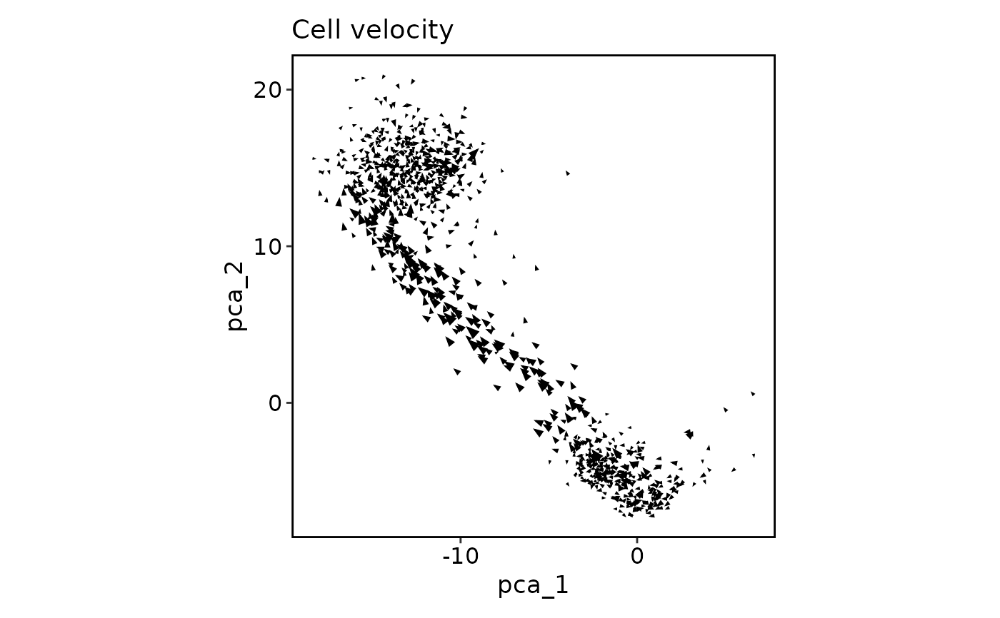
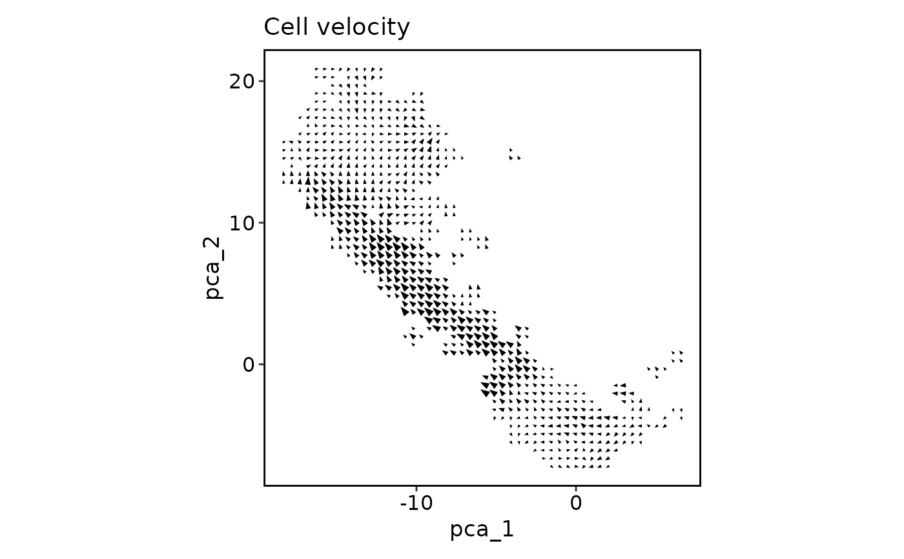
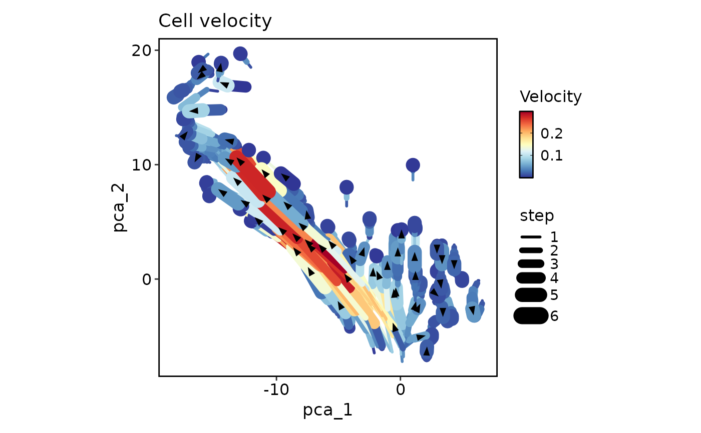
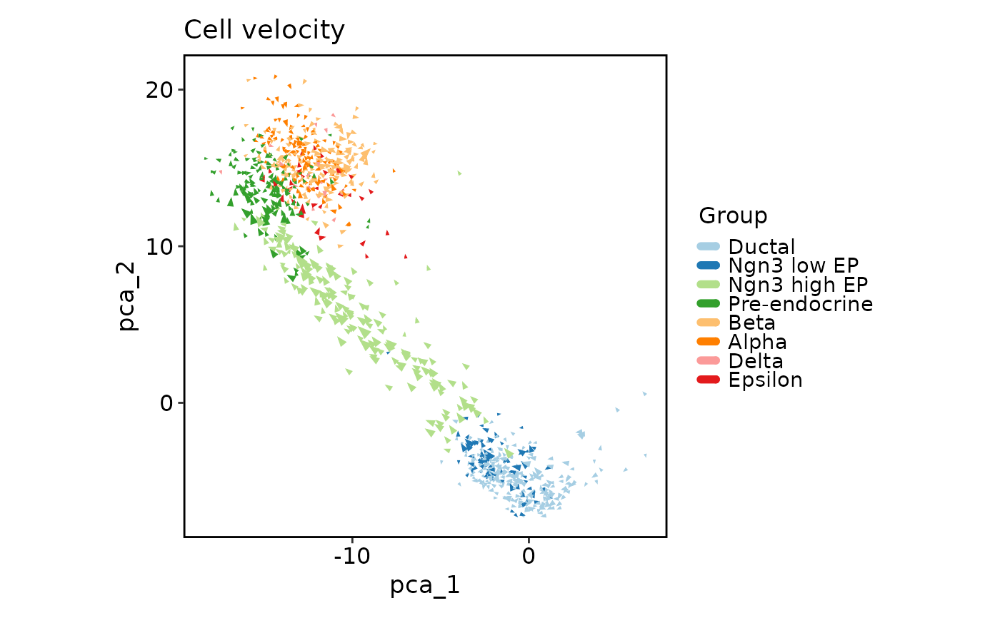

Visualizes RNA velocity on a reduced-dimension embedding. RNA velocity infers the future transcriptional state of individual cells by modeling the ratio of unspliced (nascent) to spliced (mature) mRNA transcripts. On a dimension reduction plot, velocity is displayed as arrows (or grid/stream fields) showing the predicted direction and magnitude of transcriptional change for each cell — effectively revealing the "flow" of cells through differentiation, development, or other state transitions.
CellVelocityPlot serves as a unified interface across multiple single-cell
data containers:
Seurat objects — Extracts embeddings from both the main reduction (
reduction) and the velocity reduction (v_reduction) viaEmbeddings(); metadata for grouping via@meta.data.Giotto objects — Extracts dimension reductions via
getDimReduction()usingspat_unitandfeat_typeto identify the correct spatial unit and feature type.h5ad files (.h5ad or opened
H5File) — Reads fromobsmfor both the main and velocity embeddings;obsfor metadata. Reduction names are automatically prefixed with"X_"when needed.
Usage
CellVelocityPlot(
object,
reduction,
v_reduction,
spat_unit = NULL,
feat_type = NULL,
group_by = NULL,
ident = NULL,
...
)Arguments
- object
A Seurat object, a Giotto object, a path to an
.h5adfile, or an openedH5Filefrom the hdf5r package.- reduction
Name of the main dimension reduction that defines cell positions in the plot (e.g.,
"umap","pca","tsne"). This reduction must already exist in the object. UnlikeCellDimPlot, this parameter is required — there is no default.- v_reduction
Name of the velocity reduction that encodes RNA velocity vectors (e.g.,
"stochastic_UMAP","dynamical_PCA"). Only the first two dimensions are used. This reduction must already exist in the object and is typically generated by RNA velocity analysis tools such as velocyto.R or scVelo (Python, exported to h5ad).- spat_unit
Spatial unit name for Giotto objects (e.g.,
"cell"). Ignored for Seurat and h5ad inputs. IfNULL, the default spatial unit is auto-detected viaGiottoClass::set_default_spat_unit().- feat_type
Feature type name for Giotto objects (e.g.,
"rna","dna","protein"). Ignored for Seurat and h5ad inputs. IfNULL, the default feature type is auto-detected viaGiottoClass::set_default_feat_type().- group_by
Metadata column name used to color cells by group (e.g.,
"CellType","Phase"). UnlikeCellDimPlot, this parameter is optional — whenNULL, all cells are plotted in a uniform color, which can be useful for focusing on the velocity flow patterns without visual distraction from cluster colors.- ident
Alias for
group_by, provided for compatibility with Seurat's naming convention. When bothgroup_byandidentare specified, they must be identical.- ...
Additional arguments passed to
plotthis::VelocityPlot(). Key parameters include:Plot type:
plot_type—"arrow"(default),"grid", or"stream"(see the Velocity plot types section)Appearance:
pt_size,pt_alpha,arrow_length,arrow_thickness,palette,palcolor,theme,theme_args,legend.positionGrid parameters (for
plot_type = "grid"):grid_n,grid_color,grid_alpha,grid_lwdStream parameters (for
plot_type = "stream"):stream_n,stream_color,stream_alpha,stream_lwdLayout:
split_by,combine,nrow,ncol
Note
Velocity computation prerequisites: This function only visualizes
pre-computed RNA velocity. Velocity must be calculated separately using
tools such as velocyto.R (R) or scVelo (Python). The computed
velocity reduction must already exist in the object before calling
CellVelocityPlot.
Velocity overlay in CellDimPlot: For a quick velocity overlay on
a standard dimension reduction plot (with all DimPlot features like
highlighting, density contours, and group marks), use
CellDimPlot(velocity = "stochastic_UMAP") instead. CellVelocityPlot
is best when you need grid or stream visualizations specifically.
Required parameters: Both reduction and v_reduction are required
and have no defaults — unlike CellDimPlot() where reduction can be
auto-detected for Seurat objects. This is because velocity visualization
intrinsically requires two distinct reductions, and auto-detection of the
velocity reduction is not reliable across analysis pipelines.
RNA velocity background
RNA velocity requires two dimension reductions stored in the object:
Main reduction (
reduction): A standard dimension reduction (e.g., UMAP, PCA, t-SNE) computed on the cells' current expression profiles. This defines the positions of cells in the plot.Velocity reduction (
v_reduction): A dimension reduction computed on velocity vectors derived from spliced/unspliced RNA ratios. The first two dimensions of this reduction encode the direction and magnitude of predicted transcriptional change.
Velocity reductions typically follow the naming convention
"<model>_<reduction>", where <model> is one of:
"stochastic"— Stochastic model of transcriptional dynamics"deterministic"— Deterministic model assuming constant transcription rates"dynamical"— Dynamical model accounting for time-dependent transcription rates
For example, "stochastic_UMAP" or "dynamical_PCA".
Relationship to CellDimPlot
While CellDimPlot can overlay velocity arrows on a dimension reduction
plot via its velocity parameter, CellVelocityPlot is the dedicated
velocity visualization function. The key differences are:
CellVelocityPlotdelegates toplotthis::VelocityPlot(), which supports multiple plot types:"arrow"(default),"grid", and"stream".CellVelocityPlotrequires bothreductionandv_reductionas explicit arguments (they have no defaults).CellVelocityPlotdoes not support the full set ofDimPlotoverlays (marks, density, lineages, etc.) — it focuses solely on velocity visualization.
Velocity plot types
Passed via ... to plotthis's VelocityPlot(), the plot_type
parameter controls how velocities are rendered:
"arrow"(default) — An arrow is drawn from each cell's current position to its predicted future position. Best for small to medium datasets where individual cell trajectories are of interest."grid"— The embedding space is divided into a grid, and average velocity vectors are computed per grid cell. Reduces visual clutter for large datasets and shows regional trends."stream"— Streamlines are computed from the velocity field, showing continuous flow trajectories. Best for visualizing differentiation paths and developmental trajectories.
See also
plotthis::VelocityPlot()— The underlying plotting engine supporting arrow, grid, and stream plot typesCellDimPlot— Standard dimension reduction plot; can overlay velocity arrows via thevelocityparameterCellStatPlot— Statistical summaries and comparisons
Examples
# \donttest{
data(pancreas_sub)
# Arrow plot (default) — each cell shows its predicted direction
CellVelocityPlot(pancreas_sub, reduction = "PCA", v_reduction = "stochastic_PCA")

# Grid plot — velocity vectors averaged over grid cells
CellVelocityPlot(pancreas_sub, reduction = "PCA", v_reduction = "stochastic_PCA",
plot_type = "grid")

# Stream plot — continuous flow trajectories
CellVelocityPlot(pancreas_sub, reduction = "PCA", v_reduction = "stochastic_PCA",
plot_type = "stream")

# With group coloring
CellVelocityPlot(pancreas_sub, reduction = "PCA", v_reduction = "stochastic_PCA",
group_by = "SubCellType")

# }